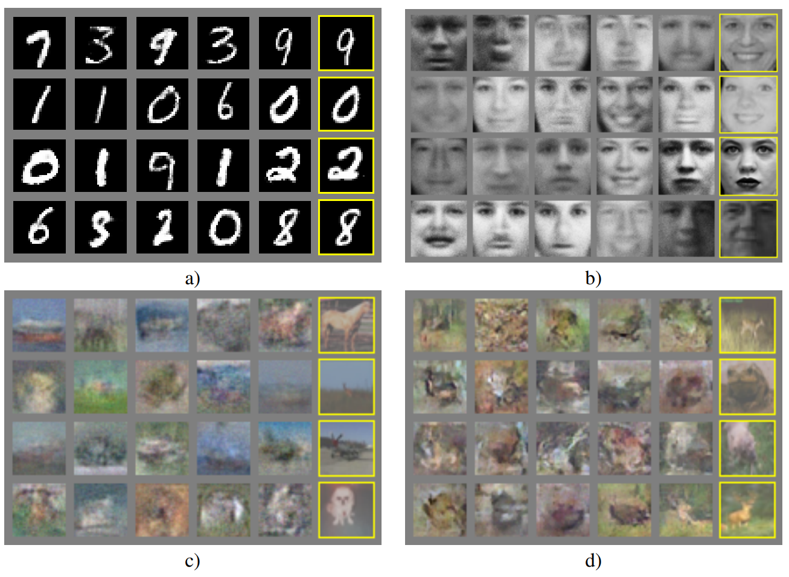
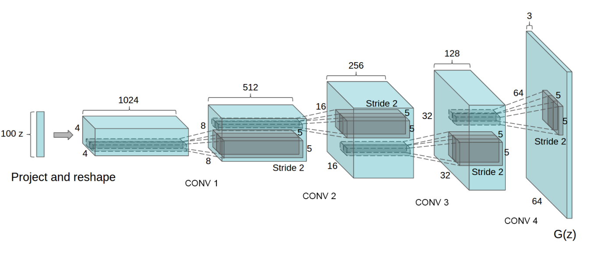
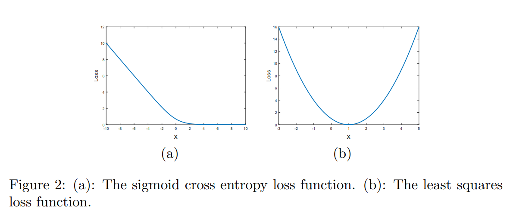
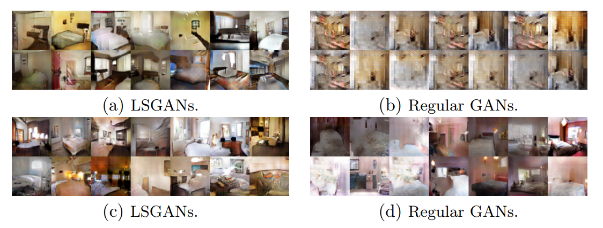
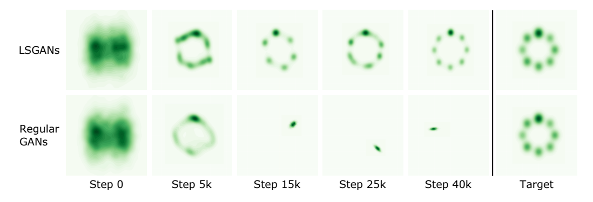
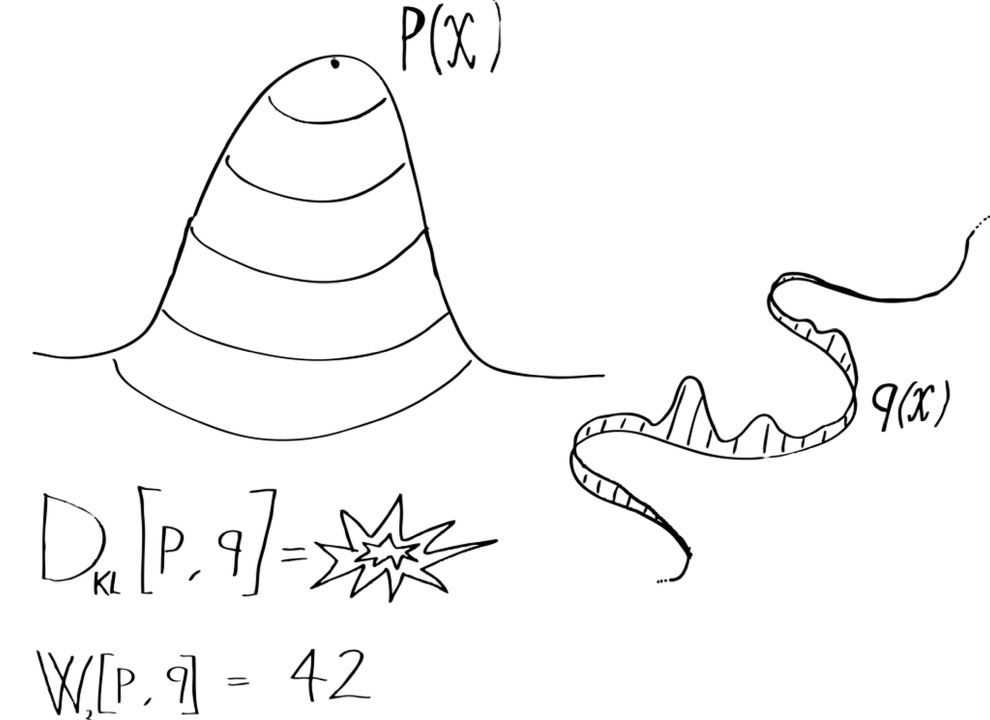

Advanced machine learning
Generative and discriminative models
Alex Avdiushenko
March 26, 2024
Supervised Learning Task Formulation
Given: set of objects $X$, set of answers $Y$
We need to find $p(y | x)$ distribution — it is discriminative model
In Generative model, we need to find joint distribution $p(x, y)$ and $$p(y | x) \propto p(x, y)$$
What is the difference?
On the one hand, Discriminative models cannot generate objects. On the other hand, they are much more expressive because they do not make any internal assumptions about the structure of the object's feature space $X$.
Generative models
Explicit density models
1. Tractable density models
Naive Bayes
$$ p(x, y) = p(y) \prod\limits_{i=1}^n p(x_i | y) $$Autoregressive models (including Transformers)
$$ p(x_1, \dots, x_n) = p(x_1) p(x_2|x_1) \dots p(x_n | x_1, \dots, x_{n-1}) $$2. Approximate density models
Diffusion based
$$ x \to x + \varepsilon_1 \to \dots \to x_n \sim N(0, \Sigma) $$Variational auto encoders — VAE
Implicit density models
Generative Adversarial Networks — GANs
$$ z \sim N(0, \Sigma) \to \boxed{\text{Model}} \to x$$Autoencoders

Ways to use autoencoders
- Feature generation, for example, to effectively solve supervised learning problems
- Dimensionality reduction
- Low loss data compression
- Trainable object vectorization, embeddable in deeper neural network architectures
- Generation of synthetic objects similar to real ones
Rumelhart, Hinton, Williams. Learning Internal Representations by Error Propagation. 1986.
David Charte et al. A practical tutorial on autoencoders for nonlinear feature fusion: taxonomy, models, software and guidelines. 2018.
Linear Auto Encoder and Principal Component Analysis
$$ \mathscr{L}_{AE}(A, B) = \sum\limits_{i = 1}^{\ell} \|{\color{orange}BA}x_i - x_i \|^2 \to \min \limits_{A,B}$$Principal Component Analysis: $F = (x_1 \dots x_{\ell})^T, U^TU = I_m, G = FU,$
$$\|F - GU^T \|^2 = \sum\limits_{i = 1}^{\ell} \|{\color{orange}UU^T}x_i - x_i \|^2 \to \min\limits_{U}$$The autoencoder generalizes the principal component analysis:
- it is not necessarily $B=A^T$ (although this is often done)
- arbitrary $A, B$ instead of orthogonal
- non-linear models
- arbitrary loss function $\mathscr{L}$ instead of quadratic
- SGD optimization instead of singular value decomposition (SVD)
Sparse Auto Encoder
Reminder from linear models: if the loss function has a kink, then we select objects. If regularizer has a kink, then we select features.
- Applying $L_1$ or $L_2$ regularization to weight vectors
- Applying of $L_1$-regularization to representation vectors $z_i = Ax_i$
- Entropy regularization
D.Arpit et al. Why regularized auto-encoders learn sparse representation? 2015.

Variational Auto Encoder
A generative model is constructed capable of generating new objects $x$ similar to the objects of the sample $X^\ell = \{x_1,\dots,x_\ell \}$
$q_\alpha(z|x)$ — probabilistic encoder with $\alpha$ parameter
$p_\beta(\hat x|z)$ — probabilistic decoder with $\beta$ parameter
$$ \begin{align*} \mathscr{L}_{VAE}(\alpha, \beta) = \sum\limits_{i=1}^\ell \log p(x_i) = \sum\limits_{i=1}^\ell \log \int q_{\alpha} (z | x_i) \frac{p_{\beta}(x_i|z) p(z)}{q_{\alpha} (z | x_i)} dz \geq \\ \geq \sum\limits_{i=1}^\ell \int q_\alpha(z|x_i) \log p_\beta(x_i|z)dz - KL(q_\alpha(z|x_i)\| p( z)) \to \max\limits_{\alpha, \beta} \end{align*} $$where $p(z)$ is the prior distribution, usually $N(0, \sigma^2 I)$
Reparametrization $q_\alpha (z|x_i):\ z = f(x_i, \alpha, \varepsilon),\ \varepsilon \sim N(0, I)$

Stochastic gradient method:
- sample $x_i \sim X^\ell,\ \varepsilon \sim N(0, I),\ z = f(x_i, \alpha, \varepsilon)$
- gradient step $ \alpha = \alpha + h \nabla_\alpha[\log p_\beta(x_i|f(x_i, \alpha, \varepsilon)) - KL(q_\alpha(z|x_i)\| p(z)) ] $
- gradient step $ \beta = \beta + h \nabla_\beta[\log p_\beta(x_i|z)] $
Generation of similar objects:
$$x \sim p_\beta(x|f({\color{orange}x_i}, \alpha, \varepsilon)), \varepsilon \sim N(0, I)$$D.P.Kingma, M.Welling. Auto-encoding Variational Bayes. 2013.
C.Doersch. Tutorial on variational autoencoders. 2016.
Autoencoders for Supervised Learning
Data: unlabeled $(x_i)_{i=1}^\ell$, labeled $(x_i, y_i)_{i=\ell+1}^{\ell + k}$

Co-learning encoder, decoder and predictive model (classification, regression, etc.)
$$ \sum\limits_{i=1}^\ell \mathscr{L}(g(f(x_i, \alpha), \beta), x_i) + \lambda \sum\limits_{i=\ell+1}^{\ell+k} \tilde{\mathscr{L}}(\hat y(f(x_i, \alpha), \gamma), y_i) \to \min\limits_{\alpha, \beta, \gamma} $$Loss functions:
- $\mathscr{L}(\hat x_i, x_i)$ — reconstruction
- $\tilde{\mathscr{L}}(\hat y_i, y_i)$ — prediction
Dor Bank, Noam Koenigstein, Raja Giryes. Autoencoders. 2020.
Generative Adversarial Net (GAN)
The generator $G(z)$ learns to generate objects $x$ from noise $z$. The discriminator $D(x)$ learns to distinguish them from real objects.

Chris Nicholson. A Beginner's Guide to Generative Adversarial Networks. 2019.
GAN Problem Statement
There is a sample of objects $\{x_i\}_{i=1}^m$ from $X$. We train
- probabilistic generative model $G(z, \alpha): x \sim p(x|z,\alpha)$
- probabilistic discriminative model $D(x, \beta) = p(x\text{ is real}| x, \beta)$
Criteria:
- Discriminative model training $D$ (binary cross-entropy in essence): $$ -L_D = \sum\limits_{i=1}^m \ln D(x_i, {\color{orange}\beta}) + \ln(1 - D(G(z_i, \alpha), {\color{orange}\beta})) \to {\color{orange}\max\limits_{\beta}}$$
- Learning the generative model $G$ from random noise $\{z_i\}_{i=1}^m$: $$ L_G = \sum\limits_{i=1}^m \ln(1 - D(G(z_i, {\color{orange}\alpha}), \beta)) \to {\color{orange}\min\limits_{\alpha}}$$
So the entire task is $ \min\limits_{\alpha, G} \max\limits_{\beta, D} L(\alpha, \beta)$
Ok, but how to train it?
It is not an easy question!
Usual SGD "as is" doesn't work here, therefore in first publications authors:
- fix $\alpha$, train $\beta$
- fix $\beta$, train $\alpha$
which is similar to EM algorithm.
And this also doesn't work in practice due to gradient vanishing. The first naive workaround is changing
$$ L_G = \sum\limits_{i=1}^m \ln(1 - D(G(z_i, {\color{orange}\alpha}), \beta)) \to L_G^\prime = -\sum\limits_{i=1}^m \ln(D(G(z_i, {\color{orange}\alpha}), \beta))$$DCGAN — 2016, Radford et al.
DCGAN feature space

LSGAN — 2017, Mao et al.
LSGANs is a type of GAN that solves a least squares problem in the process of training a GAN, thus stabilizing the training process.
Mao et al. showed that LSGAN is more robust to architecture changes and less suffer from mode collapse
 Wasserstein GAN — 2017, Arjovsky et al.
WGAN is a variant of GANs that uses the Wasserstein distance to measure the difference between the distribution of the data generated by the GAN and the real data.
Wasserstein distance is Earth Mover's Distance (EMD)
The EMD between probability distributions $P$ and $Q$ can be defined as an infimum over joint probabilities:
$$\text{EMD}(P,Q) = \inf\limits_{\gamma \in \Pi(P, Q)} \mathbb{E}_{(x, y) \sim \gamma}\left[d(x, y)\right]\,$$where $\Pi(P, Q)$ is the set of all joint distributions whose marginals are $P$ and $Q$. By Kantorovich-Rubinstein duality, this can also be expressed as:
$$\text{EMD}(P,Q) = \sup\limits_{\| f \|_L \leq 1} \, \mathbb{E}_{x \sim P}[f(x)] - \mathbb{E}_{y \sim Q}[f(y)]\,$$where the supremum is taken over all 1-Lipschitz continuous functions, i.e. $\| \nabla f(x)\| \leq 1 \quad \forall x$.
For evaluation of generated images (or other objects) one usually uses one of two metrics:
It is almost impossible to use these metrics as losses, since they use a bunch of objects for estimation, not one.
StyleGAN Demo
Papers are here: https://nvlabs.github.io/stylegan2/versions.html
Summary
- Explored the distinction between Generative and Discriminative models in machine learning, highlighting their applications, strengths, and limitations.
- Discussed Supervised Learning Task Formulation focusing on the probability distributions $p(y|x)$ for discriminative models and joint distribution $p(x,y)$ for generative models.
- Delved into Generative Models, covering Explicit and Implicit Density Models, including Naive Bayes, Autoregressive Models, Variational Autoencoders (VAE), and Generative Adversarial Networks (GANs).
- Explored Autoencoders in depth, including their architecture, applications, and comparison with PCA. Also, discussed various types like Sparse and Variational Autoencoders.
- Highlighted GANs and their development over time, including DCGAN, LSGAN, and Wasserstein GAN, showcasing their unique features and improvements in stability and image generation quality.
- Reviewed advanced concepts such as the Wasserstein distance and its significance in GANs, alongside practical challenges and solutions in training GANs.
- Concluded with demonstrations of GAN capabilities, including StyleGAN, and discussed metrics for evaluating generative models like Inception and FID scores.